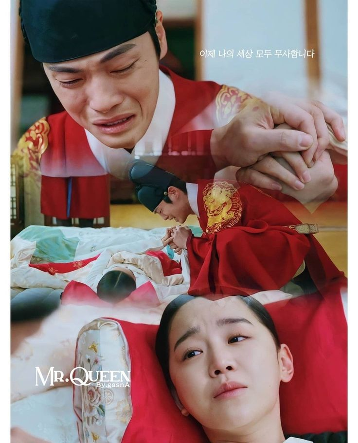

Velozes e Furiosos 1 (2001): O primeiro filme apresenta Dominic Toretto (interpretado por Vin Diesel),
um piloto de corridas de rua que também é líder de uma gangue. Brian O'Conner (interpretado por Paul Walker)
é um policial disfarçado que se infiltra no mundo das corridas para investigar Dominic. Os dois acabam se
tornando amigos e trabalhando juntos para desvendar um roubo de caminhões.
Velozes e Furiosos 2 (2003): Neste filme, Brian O'Conner se junta a um antigo amigo,
Roman Pearce (interpretado por Tyrese Gibson), para derrubar um traficante de drogas.
7 A trama se passa em Miami e envolve corridas de rua e muita ação.
Velozes e Furiosos 3: Desafio em Tóquio (2006): Este filme segue a história de
Sean Boswell (interpretado por Lucas Black), um adolescente que se muda para Tóquio
e se envolve em corridas ilegais. Ele acaba se tornando um dos principais competidores
em uma importante corrida de carros na cidade. etc...

"Sr. Rainha" ou "Mr. Queen" é um dorama coreano que combina elementos de comédia, romance e fantasia.
A história gira em torno de um chef moderno chamado Bong-hwan, que é transportado
misteriosamente de volta no tempo e acaba no corpo da rainha Cheorin na era Joseon.
Ele precisa se adaptar à vida na corte real enquanto tenta encontrar uma maneira de voltar para casa.
O dorama é conhecido por seu humor cativante e atuações brilhantes dos protagonistas.
Eu viajei como o if é eu amori ver os carros eu vi ferrari vermelha com preto eu surtei muito.
Eu tambem vi uma BMW muito bonita preta eu tirei uma foto como ele ,eu vi um porsche azul bebe 💕

Como eu ne vêjo daqui 5 ou 10 anos .bam eu gostaria de todos os neus soios acontesesen